DIG, DROP AND USE
In the present scenario, water is becoming a very scarce commodity and we should take all measures to store and use it religiously. Considering all this, @ VME, we are offering this product.
The sizes of the tanks have been designed keeping in mind the need for erecting the tanks in congested areas and places with very less clearance. These tanks have also been priced in a manner that it is lower than the cost of the conventional tank.
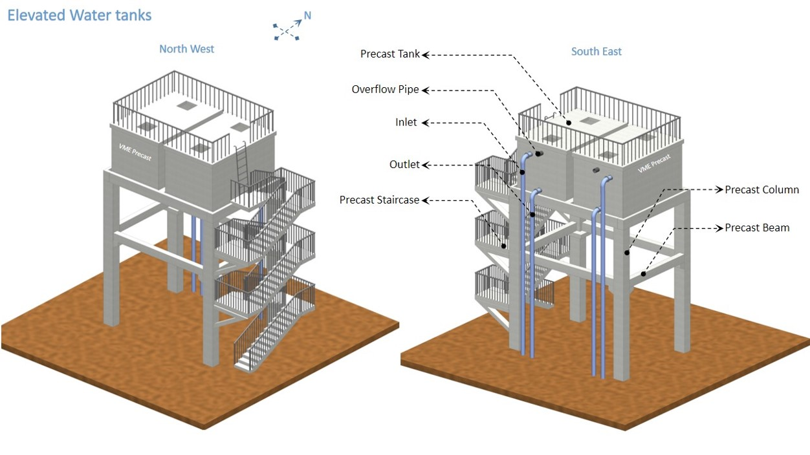
STEP : 1 - PLACING PRECASTCOLUMNS
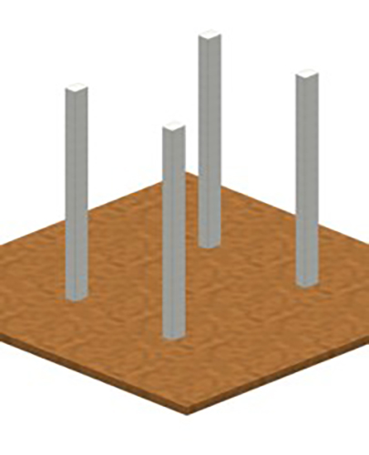
STEP : 2 - PLACING PRECAST BEAMS
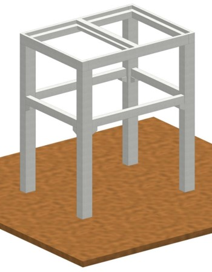
STEP : 3 - PLACING PRECAST TANKS USING CRANES
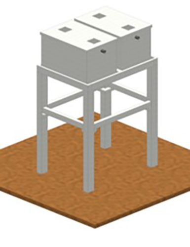
STEP : 4 - PLACING PRECAST STAIRCASE
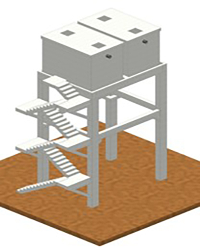
STEP : 5 - RAILINGS FOR SAFETY MEASURES
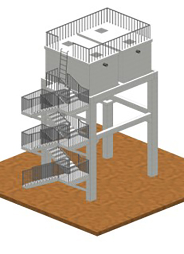
STEP : 6 - MEP FIXTURES
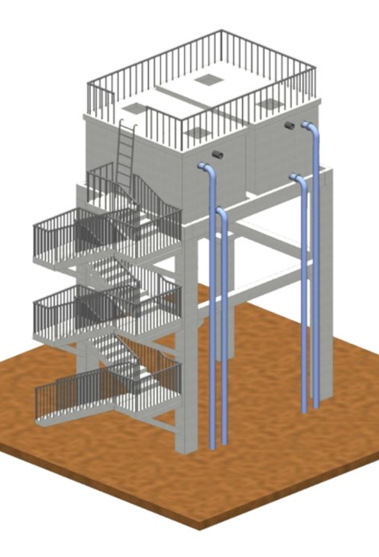
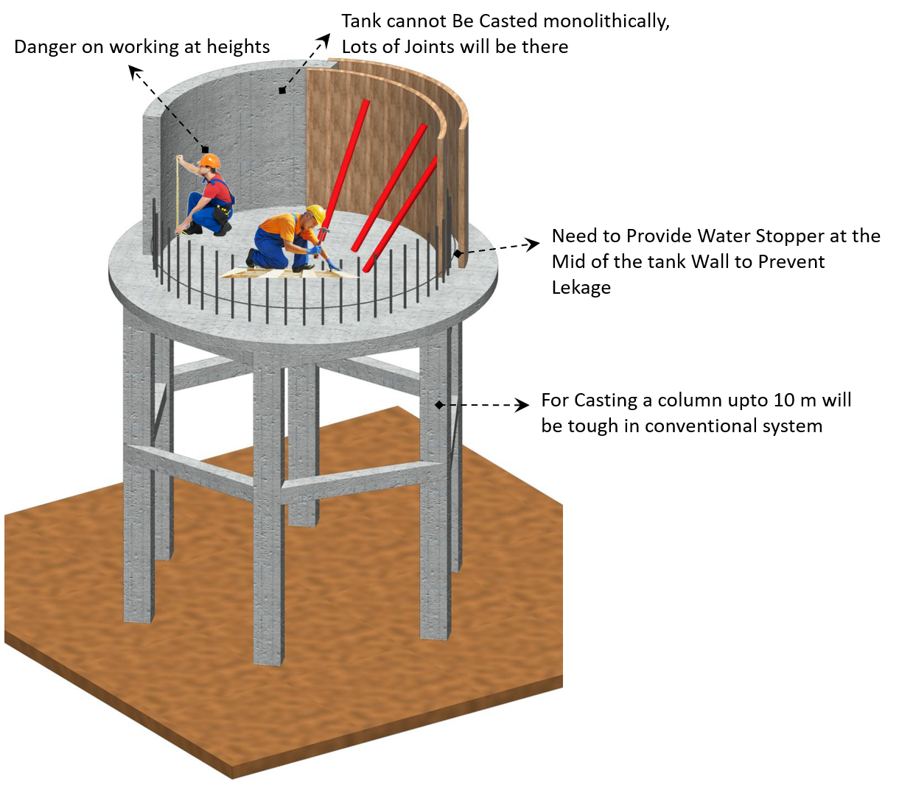
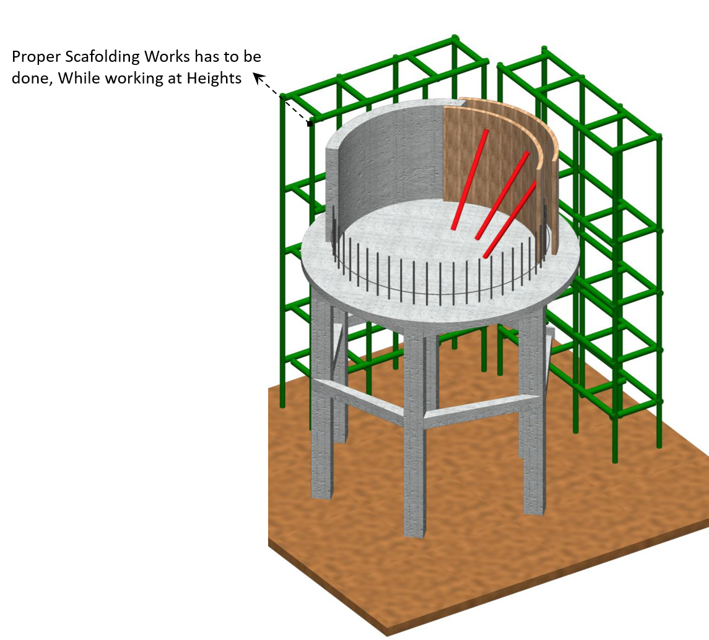
Water test is very cumbersome – since it is a single tank – entire water has to be arranged from trucks and then pumped to the top. If any leak is found, then all the water has to be drained out and then repair or grouting works have to be carried out.
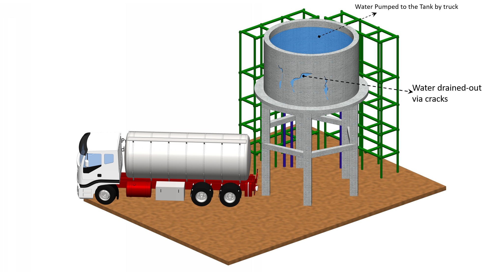
Challenges for them are
Maintenance of the tanks are easy. One tank can be shut and the other tank can be cleaned. This way, the operations need not be stopped.
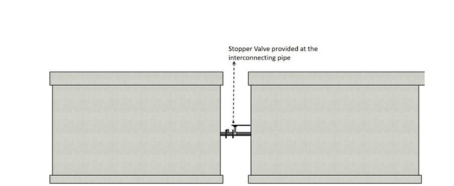
Apart from the quality checks on raw materials, production and finishing, tanks are scrupulously checked for watertightness before delivery
STEP 1: TANK IS KEPT ON A RAISED PLATFORM
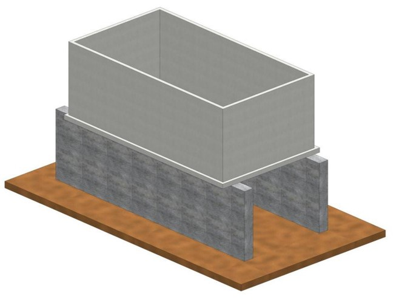
STEP 2: WATER IS FILLED UNTIL THE TOP LEVEL
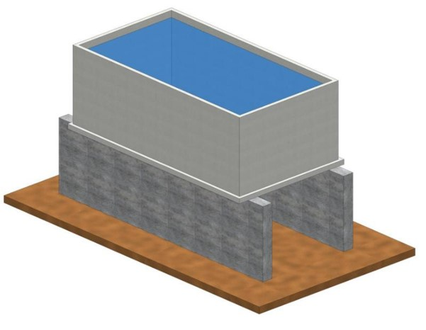
STEP 3 : TOP LEVEL IS MARKED AND MONITORED FOR 24 HOURS AFTER 24 HOURS, THE LEVEL IS MEASURED TO SEE IF THERE IS ANY DROP IN THE WATER LEVEL
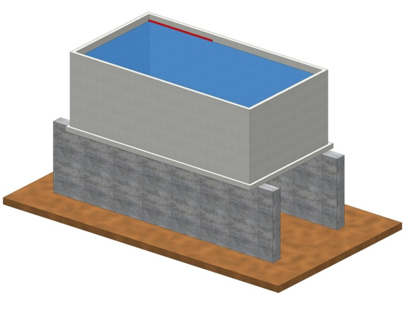
STEP 4: PHYSICAL EXAMINATION IS ALSO DONE TO SEE IF THERE ARE ANY VISIBLE LEAKS
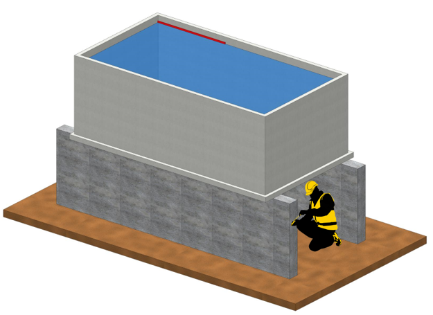
Suitably designed even for areas with spatial constraints
High Strength
Factory Made
Affordable Price
Chemically Inert
Durable
Easy and Quick Installation
Maintenance Free
Environmental Friendly
Easily Relocated